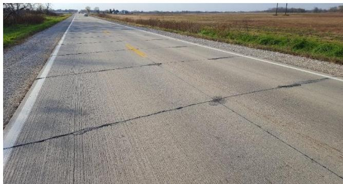
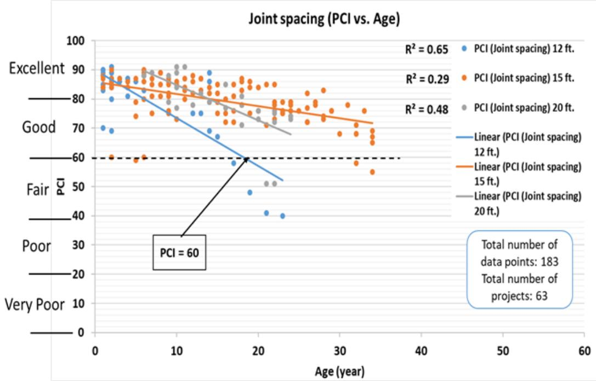
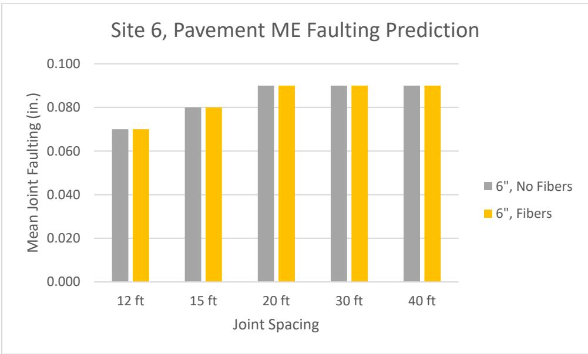
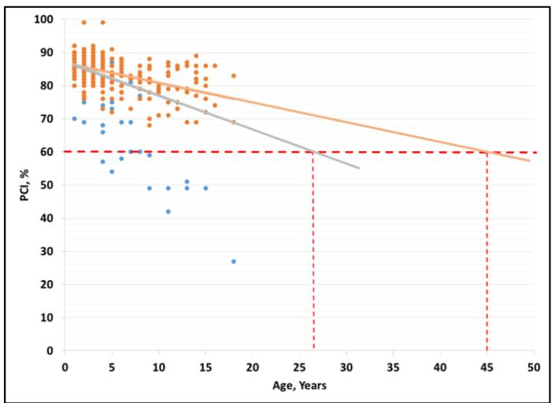
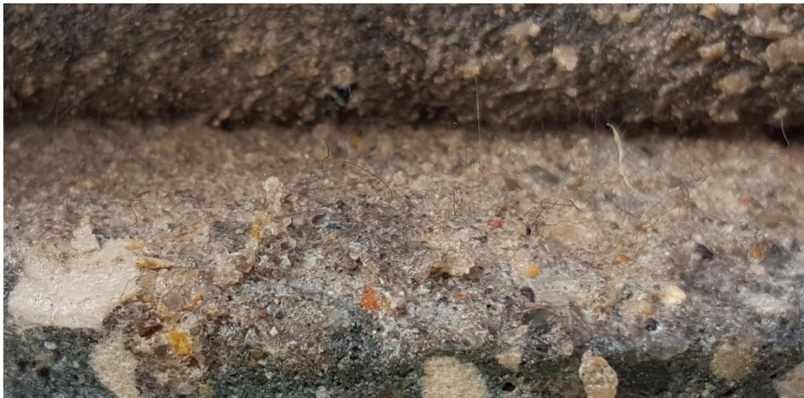
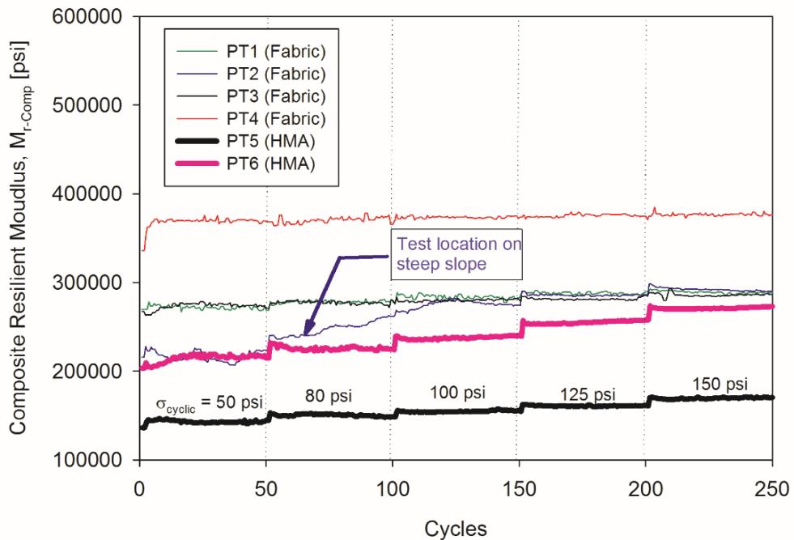
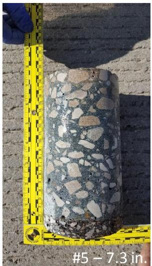
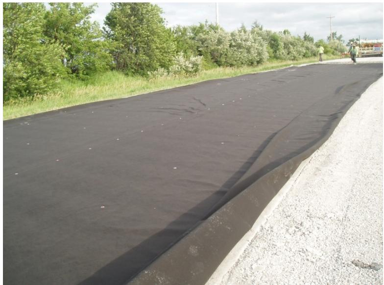
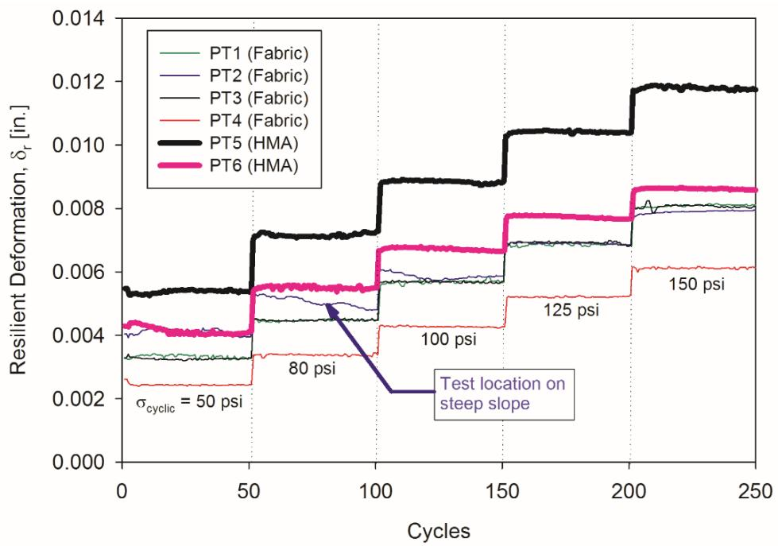
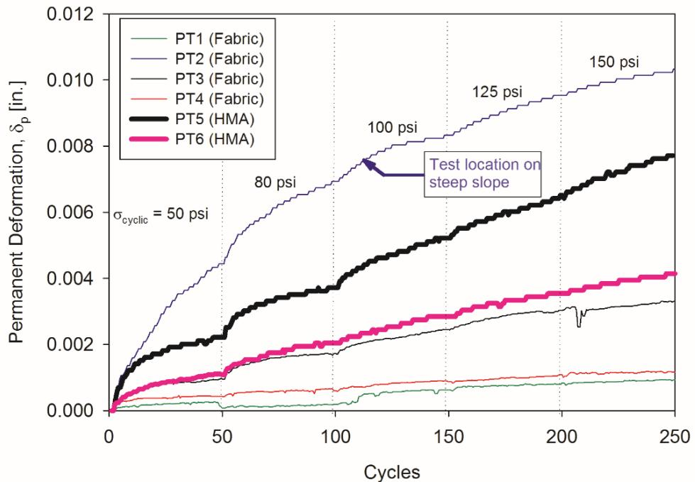

Unbonded Concrete Overlay on Asphalt (UBCOA)
An unbonded concrete overlay on asphalt is a pavement rehabilitation technique that places a thin layer of Portland cement concrete directly over an existing asphalt surface without establishing a structural bond between the two layers. A separation material, such as a geotextile membrane or a low-modulus asphalt interlayer, is installed at the interface to prevent shear transfer and allow independent movement of the concrete slab relative to the underlying pavement [2] [3] [5] [6]. This unbonded configuration enables the rigid concrete layer to provide high compressive strength and durability while the flexible asphalt sub-base accommodates differential movements and reduces stress transfer from reflective cracking [1] [2] [3].
Sources (6)
Key findings
- Unbonded concrete overlays consistently achieved high performance ratings, with the majority of sections maintaining good-to-excellent pavement condition indices and meeting ride-quality thresholds over long-term service periods [1].
- Joint spacing significantly influenced long-term structural integrity, where wider transverse joint spacings retained higher pavement condition indices for longer durations compared to narrower spacings that deteriorated rapidly [1].
- The bond between the concrete overlay and the underlying asphalt layer remained critical even when overlays were not intentionally designed to bond, as this interaction dramatically improved load-transfer efficiency and structural response [6].
- Overlays utilizing a geotextile interlayer exhibited higher composite resilient modulus and significantly reduced permanent deformation compared to those with an asphalt concrete interlayer [3].
- Fiber reinforcement was not required for thicker overlays (3.5 inches or greater), but adding fibers to thinner sections provided insurance against slab loss and multiple cracking while permitting larger slab dimensions [2].
- Conventional concrete overlays demonstrated superior load transfer performance compared to unbonded overlays with geotextile separation layers, regardless of whether the conventional overlays were designed as bonded or unbonded [6].
- Minimal scarification or cleaning and patching of the asphaltic base proved to be the most effective preparation method for maintaining adequate shear strength over time [2].
- Field programs confirmed that successful installation requires ensuring a positive drainage path for moisture within the interlayer bond-breaker to prevent erosion under heavy traffic loads [5].
General Construction Practices and Overall Performance
An unbonded concrete overlay on asphalt involves placing a new Portland cement concrete slab over an existing asphalt pavement without establishing a structural bond between the two layers [2] [5] [6]. A separation layer, such as a geotextile membrane or thin asphalt interlayer, is installed to prevent shear transfer and allow the concrete and asphalt to act as independent systems that accommodate differential movements [2] [5] [6]. This design approach shifts the neutral axis toward the flexible asphalt layer, reducing stress transfer and reflective cracking while providing a durable, high-compression surface over a resilient base [1] [2].
The figure below illustrates this construction process by showing the placement of a 4-inch thick unbonded concrete overlay over an existing surface that has been prepared with milling and a geotextile separation layer.
 A large yellow paving machine is shown placing a layer of wet concrete over an existing black asphalt surface. [5]
A large yellow paving machine is shown placing a layer of wet concrete over an existing black asphalt surface. [5]
The image displays a construction site where a yellow paver is extruding fresh concrete onto a prepared roadbed. A distinct black layer, identified as the existing asphalt pavement, is visible beneath the newly placed gray concrete material.
Research problem — Construction teams face significant challenges in selecting separation layers that provide effective drainage to prevent interlayer erosion, while simultaneously ensuring reliable anchorage for dowel bars to maintain structural integrity [5]. There is a critical need to address premature deterioration caused by inadequate joint spacing and material distress, which leads to rapid declines in pavement condition and reduced service life [1]. Research must resolve the discrepancy between design assumptions of independent slab behavior and observed field performance where unintended bonding and reduced joint efficiency accelerate cracking and faulting [6].
The following figure illustrates the joint deterioration observed in field conditions that highlights these performance discrepancies.

Joint deterioration on Dallas County F-31 at sections (a) west of Minburn and (b) west of Granger [1]The image displays a concrete pavement surface characterized by visible transverse cracks and longitudinal joint lines.
State of the art — UBCOA has transitioned from experimental trials to an established preservation technique characterized by thin concrete slabs, modest base preparation, and engineered joint systems that reliably extend the service life of deteriorating asphalt pavements [2]. Current construction practices emphasize the use of thin separation layers, such as geotextile fabrics or hot-mix asphalt sheets, combined with precision machine-control paving and accelerated concrete mixes to ensure rapid traffic reopening and grade accuracy [4] [5]. Design methodologies increasingly incorporate synthetic macro-fiber reinforcement to enhance fatigue capacity and allow for thinner overlay sections, while performance is monitored using mechanistic-empirical tools that account for variable bond conditions and joint spacing effects [1] [6].
The figure below illustrates how Unbonded Concrete Overlay on Asphalt (UBCOA) pavement condition index performance varies based on concrete overlay joint spacing.

Joint spacing (PCI vs. Age) [1]The figure plots Pavement Condition Index (PCI) against service age for Unbonded Concrete Overlay on Asphalt (UBCOA) projects, categorized by three different concrete overlay joint spacings. The data indicates that the trend line for 12-ft transverse joint spacing decreased rapidly during the first 18 years of service life before dropping below a PCI value of 60. In contrast, the trend line for 15-ft transverse joint spacing decreased gradually but remained above a PCI value of 70 during the first 35 years of service life.
Findings from the reports
- Synthetic macrofibers did not produce measurable improvements in transverse joint load-transfer efficiency, roughness, or curling behavior at the dosage rates evaluated in field studies [2] [6].
- The concrete-asphalt interface acted as a dominant factor in structural response, causing many unbonded sections to behave structurally as if they were bonded due to significant contribution from the underlying asphalt layer [6].
- Back-calculated effective slab thicknesses were consistently well above nominal concrete thicknesses, indicating that the existing asphalt pavement provided substantial structural support [6].
- Unbonded overlays exhibited markedly lower joint load-transfer efficiency and higher deflections compared to conventional bonded overlays, underscoring the performance benefits of intentional bonding [6].
- Fiber reinforcement was not required for overlays thicker than 3.5 inches but helped prevent loss of support and permitted larger slab dimensions in thinner sections [2].
- Load-transfer ratios remained high (80–99%) across various configurations, indicating effective interlock despite the lack of intentional bonding between layers [2].
- Base preparation methods affected bond strength retention, with cleaned-and-patched or scarified bases providing better performance than asphaltic concrete stress-relief layers [2].
Novelty & rigor — The research introduces a comprehensive design framework that integrates synthetic fiber reinforcement and geotextile separation layers to optimize joint spacing and ensure positive moisture drainage for unbonded overlays [1] [6]. Methodological innovation is demonstrated through the deliberate creation of truly unbonded sections using geotextile separators and the application of falling-weight deflectometer back-calculation to detect unintended bonding conditions [2] [6]. Reproducibility is established through detailed protocols for surface preparation, slip-form paving with specialized jointing equipment, and standardized performance evaluation using maturity monitoring and ultrasonic tomography [1] [2] [4] [6].
The following figure illustrates the performance prediction results for faulting at Site 6.

PMED predicted faulting at Site 6 [6]The figure displays a bar chart comparing the mean joint faulting of concrete slabs with and without fiber reinforcement across various joint spacings. PMED predicted more faulting at Site 6 than any other test site in this study, with predicted faulting increasing with joint spacing up to 20 ft.
Reported values
| Parameter | Value | Context | Source |
|---|---|---|---|
| cracked slab percentage range | 0.0%–3.0% | with exception of the widening joint | [2] |
| faulting measurement precision | 0.004 in. | measurement resolution | [2] |
| faulting measurement precision | 0.1 mm | measurement resolution | [2] |
| faulting measurement resolution | 0.1 mm | pavement operational purposes | [2] |
| faulting range | -0.04 to +0.05 in. | 3.5 in. overlay without fibers, 4.5 ft. panels | [2] |
| IRI (roughness) | 115–125 in./mi | general observation | [2] |
| IRI range | 115–125 in./mi | ride quality measurement | [2] |
| load transfer ratio | 80% to 95% | 3.5 in. overlay without fiber, 6.0 ft. slabs | [2] |
| load transfer ratio | 80% to 99% | 3.5 in. overlay without fiber, 4.5 ft. slabs | [2] |
| load transfer ratio range | 80% to 99% | 3.5 in. overlay without fiber, 4.5 ft. slabs | [2] |
| percentage of cracked slabs | 0.0%–3.0% | with the exception of the widening joint | [2] |
| fiber dosage rate | 4 lb/yd3 | concrete overlays in this study | [6] |
The following figure illustrates the BCOA-ME predicted cracking at Site 4.
 BCOA-ME predicted cracking at Site 4 [6]
BCOA-ME predicted cracking at Site 4 [6]
The figure displays a bar chart comparing the percentage of cracked slabs across different joint spacing intervals (6 ft, 12 ft, and 15 ft) for various concrete overlay configurations. The data illustrates that predicted slab cracking is significantly higher in sections without fibers compared to those with fibers, particularly as joint spacing increases from 6 ft to 15 ft. Increasing the concrete thickness from 4 inches to 6 inches reduced the predicted cracking relative to the corresponding 4-inch sections.
While the overlays generally perform well despite the lack of intentional bonding, significant variability exists in load-transfer efficiency and structural response, with some sections behaving effectively as bonded systems due to interface friction while others exhibit markedly lower stiffness. Construction parameters such as joint spacing and base preparation critically influence performance outcomes, where optimal practices like minimal scarification or specific joint patterns help maintain high load-transfer ratios and prevent premature distress. [1] [2] [6]
Implications — Designers should prioritize unbonded concrete overlays as a durable rehabilitation option, ensuring sufficient slab thickness and longer transverse joint spacings to sustain high pavement condition indexes over extended service lives [1]. Construction practices must rigorously control the interface condition between layers, as unintended bonding significantly alters structural response and load transfer efficiency compared to true unbonded systems [6]. Successful implementation requires careful selection of separation materials with adequate drainage capacity, precise joint detailing to prevent misalignment, and minimal surface preparation to maintain cross-slope and load transfer [2] [5].
Limitations — Performance data are heavily skewed toward low-traffic roads and thin overlays, limiting confidence in extrapolating results to higher-volume highways or thicker sections [1]. Existing design tools cannot evaluate certain practical joint configurations, leading to incomplete performance forecasts for long-spacing designs [6]. Field monitoring covers only early service life, which restricts the ability to validate predictions regarding long-term behavior and durability [6].
The figure below illustrates how PCI improvements can enhance performance in overlays with 12-foot joint spacing over periods of less than 20 years.

PCI improved performance all overlays 12-ft joint spacing (less than 20 years) [1]The figure plots Pavement Condition Index (PCI) against age in years for concrete overlay data, displaying a scatter of orange and blue points with corresponding linear trend lines. Orange points represent well-performing pavements while blue points refer to pavements that have deteriorated more quickly than normal. This visualization demonstrates how specific design factors like joint spacing influence the service life and durability of concrete overlays.
Evidence: 5 reports (3 primary)
Interlayer Systems and Bond-Breaker Performance
An unbonded concrete overlay consists of a thin concrete layer placed over an existing pavement, separated by a bond-breaking interlayer such as a low-modulus asphalt or geotextile fabric [3]. This interlayer functions to relieve tensile stresses and limit reflective cracking in the new concrete while permitting movement between layers, thereby improving structural performance without fully bonding the overlay to the underlying pavement [3].
The following figure illustrates the physical characteristics of this bond-breaking interlayer.

Close-up view of fibers bonded to concrete. [3]The image displays a close-up of the interface between a geotextile and a concrete surface, revealing that individual synthetic fibers are firmly embedded within the cement matrix. This visual evidence demonstrates that “fibers of the geotextile were firmed bonded to the concrete and had to be broken to be removed.” This observation is relevant to Unbonded Concrete Overlay on Asphalt (UBCOA) because it highlights a potential failure mode where the intended separation material fails to act as an effective bond-breaker, potentially compromising the structural independence of the overlay.
Research problem — The viability of using thin concrete overlays to extend pavement life depends on achieving a durable partial bond with the existing asphalt base, yet current practices often suffer from deteriorating shear bonds that lead to premature failure [2]. There is a need for effective, low-cost interlayer systems that reliably prevent adhesion between new concrete and old asphalt while maintaining proper joint alignment to avoid stress concentrations and reflective cracking [4]. The performance implications of selecting specific bond-breaker materials, such as geotextiles versus thin asphalt layers, remain unclear regarding their impact on composite stiffness, deformation resistance, and long-term durability [3].
The figure below illustrates the composite resilient modulus results obtained from the five stress sequences across all test points.

Composite resilient modulus results for the five stress sequences at all test points. [3]The figure plots the composite resilient modulus against cyclic loading to evaluate the mechanical performance of different interlayer systems, including fabric and hot-mix asphalt (HMA).
State of the art — The established practice for unbonded concrete overlays on asphalt utilizes a thin asphalt-concrete interlayer to serve as a bond breaker, though recent field trials have introduced non-woven geotextile fabrics as an alternative that enhances drainage and structural response [3]. Comparative studies using automated plate-load testing indicate that geotextile interlayers provide a performance advantage over asphalt concrete by demonstrating higher composite resilient modulus and lower permanent deformation while still fulfilling the required bond-breaking function [3].
The following figure illustrates PCC overlay cores taken from test locations utilizing a geosynthetic fabric interlayer.

PCC overlay cores from test locations showing the internal structure of the concrete and interlayer. [3]The image displays a cylindrical core sample of Portland cement concrete (PCC) with visible aggregate, positioned next to a yellow ruler for scale.
Findings from the reports
- Reported that geotextile bond-breaker systems averaged approximately one-third the material and labor costs of conventional asphalt separators [4] [5].
- Demonstrated that geotextile sheets function as a viable bond-breaker layer, adhering to the new concrete while remaining free of the existing pavement during slipform paving [4].
- Revealed that overlays with geotextile interlayers exhibited significantly lower permanent deformation and power-model exponents compared to those with asphalt concrete interlayers [3].
- Measured that geotextile sections required greater overlay thicknesses (8.8–10.2 in.) compared to asphalt concrete sections (7.3–7.6 in.) [3].
- Identified that designers must ensure positive drainage paths for moisture within the interlayer to prevent erosion under heavy traffic loads [5].
- Observed that approximately one-fifth of transverse joints in a dowel-jointed overlay had misplaced dowel bars, necessitating corrective actions such as increased anchor density [5].
Novelty & rigor — The research introduces the field-scale application of thin geotextile fabric as a functional replacement for conventional thick asphalt bond-breakers, treating the separation layer as an active drainage system rather than merely a slip surface [4] [5]. Methodological rigor is established through the first use of automated cyclic plate load testing to directly compare the mechanistic behavior and composite resilient modulus of geotextile versus asphalt interlayers in situ [3]. Reproducibility is ensured by codifying precise installation protocols, including specific fastening grids and overlap limits for the fabric, alongside standardized testing procedures that eliminate operator bias through full automation [3] [5].
The specific installation protocols mentioned above are illustrated in the figure below, which details the nailing pattern required to secure the geotextile materials to the existing pavement.

Geotextile separation material installed on the existing pavement surface prior to concrete placement. [4]The image displays a wide expanse of black geotextile fabric laid flat over an asphalt roadbed, extending towards a line of trees in the background. Small fasteners are visible distributed across the surface of the material to secure it to the underlying pavement.
Reported values
| Parameter | Value | Context | Source |
|---|---|---|---|
| overlay thickness | 7.3–7.6 in. | AC interlayer sections | [3] |
| overlay thickness | 8.8–10.2 in. | geotextile interlayer sections | [3] |
| HMA separator nominal depth | 1-inch | geotextile in place of HMA separator | [4] |
| compressive strength | 5,850 psi | concrete mixture average 28 day | [5] |
| misplaced dowel bar rate | 18% | transverse joints in the passing lane for a length of about 2,000 ft. | [5] |
| overlay length | 12 mile | unbonded overlay on asphalt in Nebraska | [5] |
| overlay thickness | 7 “ | dowel jointed unbonded overlay in South Dakota | [5] |
The figure below illustrates the specific dowel bar configuration used in South Dakota, highlighting instances where dowels were intentionally omitted between wheel paths.
 Dowel bar configuration in a concrete overlay construction site. [5]
Dowel bar configuration in a concrete overlay construction site. [5]
The image shows the installation of steel reinforcement bars within a fresh concrete slab, with heavy machinery positioned above to place the material. A unique design feature was the omission of dowel bars between the wheel paths.
Across the reviewed reports, geotextile interlayers are established as a viable alternative to conventional asphalt separation layers, offering comparable or superior mechanical performance while significantly reducing material costs. While geotextiles provide cost savings and effective unbonded interface functionality by adhering to the new concrete while remaining free of the existing pavement, their long-term performance requires further evaluation beyond short-term field trials. [3] [4] [5]
The figure below illustrates a practical application of this technology, showing a geotextile separation layer used in Missouri.
 A large yellow concrete paver laying a fresh pavement surface while workers monitor the operation. [5]
A large yellow concrete paver laying a fresh pavement surface while workers monitor the operation. [5]
The image shows a construction site where heavy machinery is placing a layer of material onto an existing road base, with a dump truck positioned nearby to supply the mix. This scene depicts the application of a geotextile separation layer for unbonded concrete overlays, which is used as an interface material in pavement rehabilitation projects.
Implications — The significant improvement in structural response and reduction in permanent deformation suggests that permeable geotextiles may offer superior load-bearing capacity and rutting resistance compared to conventional asphalt concrete interlayers [3]. Due to limited sample sizes and unisolated variables, the standardization of geotextile bond breakers requires additional layered testing with larger samples and direct drainage measurements before adoption [3]. Long-term performance verification should include continuous monitoring of ride quality metrics to confirm sustained benefits under traffic loading [3].
The figure below illustrates the resilient deformation results across the five stress sequences to support these findings.

Resilient deformation ( δ_r ) results for the five stress sequences at all test points [3]The figure displays resilient deformation values over a series of cycles, comparing sections with geotextile and asphalt concrete interlayers under increasing cyclic stress.
Limitations — The study’s conclusions are constrained by a limited data set that prevented the isolation of overlay thickness effects and omitted analysis of underlying foundation properties due to resource restrictions [3]. Methodological assumptions regarding fully bonded pavement conditions do not apply to this unbonded system, and field testing was further compromised by poor equipment seating on steep slopes [3].
The figure below illustrates the permanent deformation results across the five stress sequences at all test points.

Permanent deformation results for five stress sequences at all test points. [3]Several data series are identified as ‘Fabric’ and others as ‘HMA’, indicating the materials tested under cyclic loading.
Evidence: 4 reports (3 primary)
Related concepts
In this hierarchy
- Parent: Concrete Overlay
- Sibling: Bonded Concrete Overlay on Asphalt (BCOA)
- Sibling: Bonded Concrete Overlay on Concrete (BCOC)
- Sibling: Geotextile Bond Breaker
- Sibling: Iowa Direct Shear Method
- Sibling: Thin Whitetopping
- Sibling: Unbonded Concrete Overlay on Concrete (UBCOC)
- Sibling: Unbonded Concrete Overlay
Related by shared evidence
- Pavement Smoothness — shares 6 reports
- Unbonded Concrete Overlay — shares 6 reports
- Bonded Concrete Overlay on Asphalt (BCOA) — shares 5 reports
- Concrete Overlay — shares 5 reports
- Falling Weight Deflectometer — shares 5 reports
- Thin Whitetopping — shares 5 reports
- Unbonded Concrete Overlay on Concrete (UBCOC) — shares 5 reports
- Composite Pavement — shares 4 reports
Similar topics
- Unbonded Concrete Overlay on Concrete (UBCOC)
- Bonded Concrete Overlay on Asphalt (BCOA)
- Unbonded Concrete Overlay
- Concrete Overlay
- Bonded Concrete Overlay on Concrete (BCOC)
- Joint Spacing Effects on Performance
- Composite Pavement
- Geotextile Bond Breaker
References
- J. Gross, D. King, D. Harrington, H. Ceylan, Y. A. Chen, S. Kim, P. Taylor, and O. Kaya, "Concrete Overlay Performance on Iowa's Roadways (Field Data Report)," National Concrete Pavement Technology Center, Ames, IA, Rep. TR-698, 2017. [Online]. Available: https://www.intrans.iastate.edu/wp-content/uploads/2017/09/Iowa_concrete_overlay_performance_w_cvr.pdf
- J. K. Cable, J. L. Morud, and T. R. Tabbert, "Evaluation of Composite Pavement Unbonded Overlays: Phase III," CTRE, Iowa State University, Ames, IA, Rep. TR-478, 2006. [Online]. Available: https://rosap.ntl.bts.gov/view/dot/24065
- D. J. White and P. Taylor, "Automated Plate Load Testing on Concrete Pavement Overlays with Geotextile and Asphalt Interlayers: Poweshiek County Road V-18," National Concrete Pavement Technology Center, Ames, IA, 2018. [Online]. Available: https://www.intrans.iastate.edu/wp-content/uploads/2018/04/Powashiek_CR_V-18_APL_testing_w_cvr.pdf
- P. D. Wiegand, J. K. Cable, T. Cackler, and D. Harrington, "Improving Concrete Overlay Construction," National Concrete Pavement Technology Center, Ames, IA, Rep. TR-600, 2010. [Online]. Available: http://publications.iowa.gov/20076/1/IADOT_tr_600_Improving_Concrete_Overlay_Construction_2010.pdf
- G. Fick and D. Harrington, "Concrete Overlay Field Application Program, Final Report: Volume I," National Concrete Pavement Technology Center, Ames, IA, 2012. [Online]. Available: https://apps.itd.idaho.gov/apps/manuals/Materials/Materials%20References/OverlayFieldAppFinalReport.pdf
- D. King, B. Yang, P. Taylor, and H. Ceylan, "Field Performance of Fiber-Reinforced Concrete Overlays," Institute for Transportation, Iowa State University, Ames, IA, Rep. TR-816, 2025. [Online]. Available: https://www.intrans.iastate.edu/wp-content/uploads/2025/05/field_performance_of_frc_overlays_w_cvr.pdf
Feedback on this page